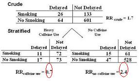

Example: Qualitative Interaction - Pregnancy and Coffee Study
Lead Author(s): Jeff Martin, MD
Study of Effects of Caffeine Consumption on Delayed Conception
Stanton provides this example from a study effects of caffeine consumption on delayed conception.
The principal exposure in question is smoking.
- What if we are concerned about the effects of caffeine use?
- We know that smoking is related to caffeine use and we might wonder if caffeine use is related to delayed conception.
- We could have considered caffeine use an intermediary variable if we thought that the only way that smoking caused delayed conception was through caffeine use, but this is not our intent.
- Instead, we are interested in knowing whether smoking has any direct biological pathways in preventing conception.
Stratification
Look what happens after we stratify by caffeine use (below).
- In those women who do not use caffeine, smoking is associated with over a two-fold risk of delayed conception.
- In women who use lots of caffeine the risk of smoking is 0.7, if anything a protective effect. 
Do Not Summarize the Effect
Would you think it is appropriate to try to summarize these two effects, 2.4 and 0.7, into one overall number?
- No, I think most of us would agree that it does not make much sense to try to summarize these two very different numbers into one.
- If we did, we are very much missing an important aspect of the system under study.
Qualitative Interaction
So, we stratified by caffeine use and we saw a qualitative interaction, actually both on the multiplicative (i.e., the risk ratio) and additive (i.e., the risk difference) scales.
- We decided that this is too rich of a story to sweep under the carpet and hence it would not be appropriate to try to summarize these two effects, 2.4 and 0.7, into one overall number.
- Instead, we should report the two stratum-specific estimates separately.
In the presence of effect modification of this magnitude, effect modification trumps any further consideration of confounding. Stop here. End of story.
References
Stanton, C. K., & Gray, R. H. (1995). Effects of caffeine consumption on delayed conception. Am J Epidemiol, 142(12), 1322-1329.